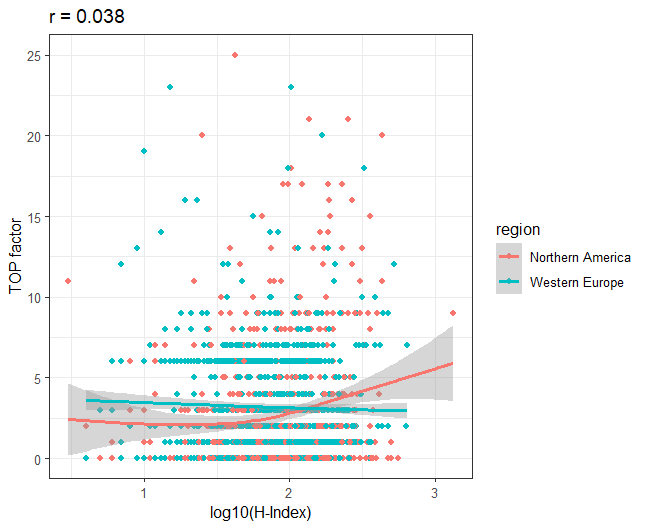
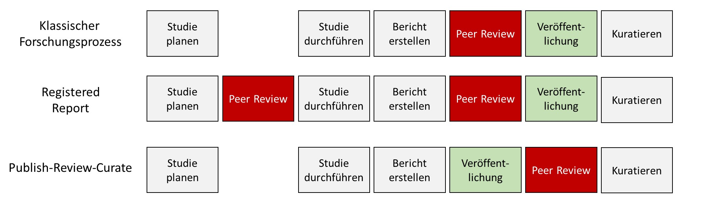

14 Politik
title: “Das System” editor: visual format: html bibliography: references.bib bibliographystyle: apa
Ansätze, die darauf abzielen, das System zu verändern, bergen am meisten Potenzial, denn um im System Geld verdienen zu können, müssen Forschende sich an die Regeln halten. Und solange Publikationen die Währung sind und Paper mit knackigen Titeln und eindeutigen Ergebnissen als qualitativ hochwertiger befunden werden, sind Forschende darin motiviert, nach knackigen Titeln und eindeutigen Ergebnissen und nicht nach der Wahrheit zu suchen.
Insgesamt ist eine positive Entwicklung sichtbar [@Korbmacher.2023] und eine Veränderung der Anreizstruktur wird anvisiert. Sie lässt sich als Angleichung des wissenschaftlichen Systems an die Mertonschen Normen (nach Robert Merton) auffassen [@merton1973sociology]: (1) Kommunismus: Das wissenschaftliche Wissen sollte allen Wissenschaftler*innen gleichermaßen gehören, um die Zusammenarbeit zu fördern. (2) Universalismus: Wissenschaftliche Güte ist unabhängig vom soziopolitischen Status und persönlichen Attributen der Teilhabenden. (3) Desinteresse: Wissenschaftliche Institutionen handeln im Interesse der Wissenschaft und nicht für persönlichen Gewinn. (4) Organisierter Skeptizismus: Wissenschaftliche Behauptungen sollten einer kritischen Prüfung unterzogen werden bevor sie akzeptiert werden.
Nosek empfiehlt in einem Blogpost eine Maßnahmenstruktur, nach welcher die gewünschten Veränderung nacheinander …
- möglich (z.B. durch Infrastruktur wie online Repositorien, in denen Forschungsmaterialien öffentlich und gratis hochgeladen werden können),
- einfach (z.B. durch barrierearme Angebote, mehrsprachige Anleitungen),
- normativ (z.B. durch Wissenschaftliche Communities, die gemeinsam hinter Forderungen der Verbesserung stehen),
- belohnend (z.B. durch designierte Preise), und
- notwendig (z.B. durch Mindeststandards, die von Zeitschriften oder Drittmittelgebern gefordert werden)
gemacht werden sollen. Wie die verschiedenen Ansätze bei den verschiedenen Akteuren, also Politik, Universitäten, oder Zeitschriften konkret aussehen, wird im Folgenden diskutiert.

International stehen politische Parteien und Vereinigungen deutlich hinter Open Science und Open Access. Beispielsweise empfiehlt die UNESCO einen universellen Zugang zu wissenschaftlichen Wissen ungeachtet von Herkunftsland, Geschlechterrolle, politischen Grenzen, ethnischer Zugehörigkeit, oder ökonomischen oder technologischen Hürden [@unesco2020first; p. 3]. Arbeitsgruppen für politische Instrumente, Förderung, und Infrastruktur wurden entsprechend gegründet. Die G7 setzen sich für wissenschaftliche Integrität, akademische Freiheit, und Open Science ein. Offener Zugang aber auch Transparenz des wissenschaftlichen Vorgehens wird auch seitens der Europäischen Union gefordert. Infrastruktur (z.B. die European Open Science Cloud) und diverse Open Science Forschungsprojekte werden gezielt gefördert. Für alle durch die EU geförderten Forschungsprojekte steht zudem die kostenlose Publikations- und Begutachtungs-Plattform Open Research Europe zur Verfügung.
In Deutschland hat sich die Regierung der Periode 2021-2025 im Rahmen des Koalitionsvertrages vorgenommen, „Open Access … als gemeinsamen Standard [zu] etablieren.” Einzelne Bundesländer wie Nordrhein-Westfalen haben in Zusammenschlüssen aus den jeweiligen Universitäten darüber hinaus Open Access Strategien entwickelt [@Openness2023-ga] und arbeiten aktuell an Open Science Strategien. Andere Länder, wie zum Beispiel Schweden, haben bereits nationale Richtlinien zu Open Science entwickelt. Hinsichtlich der Problematik von Machtmissbrauch wird das Problem beispielsweise in einem Eckpunkte-Papier des Landes NRW anerkannt, doch als Einzelfall- statt System-Problem verstanden (Kommentar dazu).
14.0.1 Universitäten
Das Thema Open Science hat bei vielen Universitäten bereits Anklang gefunden. Während die meisten deutschen Universitäten (zeitlich begrenzte) Mittel für Open Access Publikationen haben, existieren an einigen darüber hinaus Open Science Policys (z.B. FAU Erlangen), Open Science Centers (z.B. LMU Open Science Center; Köln Open Science Center; Münster Center for Open Science; Mannheim Open Science Office). Darüber hinaus unterstützen das Leibniz-Informationszentrum Wirtschaft in Kiel und das Leibniz-Institut für Psychologie Replikationsforschung beispielsweise mit einer Replikationszeitschrift (https://www.jcr-econ.org) oder im Rahmen einer Juniorprofessur für Psychologische Metawissenschaft. Eines der größten Zentren für Metawissenschaft n Europas hat sich in den Niederlanden in Tilburg gebildet. Die Berliner Universitäten haben eine gemeinsame Open Access Erklärung entwickelt (https://openaccess.mpg.de/Berliner-Erklaerung) und in Frankreich ist die Universität Sorbonne ein Pionier: Gemeinsam mit der Universität Amsterdam und dem Universitätscollege London wurde eine Erklärung über die die Veröffentlichung von Forschungsdaten unterzeichnet. Seit 2024 hat die Universität Sorbonne darüber hinaus den Vertrag mit Clarivate für die Nutzung der Forschungsdatenbank „Web of Science” gekündigt und arbeitet seitdem mit der Open Source Software „OpenAlex” [@Priem2022-mb].
Für die langfristige Entwicklung der Wissenschaften haben Universitäten dadurch eine besondere Verantwortung, dass sie Wissenschaftler*innen beschäftigen und an ihnen die Auswahl für die wenigen unbefristeten Arbeitsplätze in der Wissenschaft fallen. Wenn jahrzehntelang Professuren auf Basis subjektiver, nicht-reproduzierbarer, und für gute Wissenschaft nachrangigen Kriterien gewählt werden (z.B. Anzahl an Publikationen in Fachzeitschriften), kann sich das negativ auf die Entwicklung von Wissenschaften auswirken. Diesem Problem entgegenwirkend wurde ein Forschungspreis des Berlin Institute of Health (BIH), der jährlich für Projekte zur Förderung von wissenschaftlicher Integrität verliehen wird, an ein Projekt, das objektive und sinnvolle Auswahlkriterien für Professor*innen entwickelt vergeben [@schonbrodt2022responsible; @gartner2022responsible]. Um die Rolle quantiativer Indikatoren zu schwächen wird bereits an einigen Universitäten und bei DFG-Anträgen die “N-best” bzw. häufig “5-best” Regel angewandt [@Frank2019-ro]: Dabei dürfen nur die 5 besten Forschungsartikel in der Bewerbung genannt werden und die Evaluation darf nur auf Basis von ihnen geschehen.
Innerhalb von Universitäten spielen außerdem die Bibliotheken eine aufklärerische Rolle hinsichtlich Forschungsdatenmanagement und Publikationskultur [@Schmidt2024-uv]. Über sie kann der Forschungsprozess mit entsprechender Infrastruktur (z.B. zum Lagern und Veröffentlichen von Forschungsmaterialien und -ergebnissen) unterstützt werden [@Quan2021-hw] und verhindert werden, dass sich eine „Abhängigkeit von wenigen kommerziellen Anbietern” ergibt, die „begrenzen, was [bei] der Forschung an Arbeitsmöglichkeiten und Fragestellungen erreichbar ist” [@Siems2024-vv]. Eine Pflicht, Mitglieder eine Universität zur Einhaltung von Open Science Strategien zu bewegen, gibt es an Universitäten durch den hohen Stellenwert der „Freiheit der Forschung” kaum. Damit könnten sie Gefahr laufen, für Forschende weniger attraktiv zu werden: Wenn beispielsweise auf namhafte Zeitschriften nicht mehr über die Universität zugegriffen werden kann, weil Verträge mit closed-access Zeitschriften gekündigt wurden, erschwert das den Forschenden die Arbeit. Beispielsweise klagte die juristische Fakultät der Universität Konstanz gegen eine Zweitveröffentlichungspflicht: Forschende in Deutschland haben das Recht zur Zweitveröffentlichung, das heißt, dass sie ihre Forschung, wenn sie in einer Fachzeitschrift veröffentlicht wurde, auch selbst (z.B. über eigene Websites) veröffentlichen dürfen. In Konstanz konnten die Forschenden nicht dazu verpflichtet werden, davon Gebrauch zu machen.
Ein weiteres Stellrad von Universitäten ist die Bezuschussung von Publikationskosten bei Zeitschriften. Wird beispielsweise die wissenschaftliche Qualität einer Zeitschrift angezweifelt, kann eine Universität diese Bezuschussung stoppen.
Eine oft vernachlässigte Rolle kommt außerdem der universitären Lehre hinzu. Durch die Freiheit von Forschung und Lehre und bereits durchgeplanten Studiengängen gestaltet sich die Integration neuer Themen wie Open Science schwierig. Forschende, in deren Lehre die Thematik eine Rolle spielt, teilen proaktiv ihre Materialien, erstellen gemeinsam Curricula, und sind beispielsweise in großen internationalen Initiativen wie dem Framework for Open and Reproducible Research Training (FORRT.org) vernetzt (konkrete Vorschläge zur Integration von Open Science in die Lehre hat zum Beispiel @Pennington2024-mp veröffentlicht.
14.0.2 Institute und Vereinigungen
Wissenschaftliche Gebiete leben vor allem durch Communities, also alle in dem Bereich forschenden Personen. Sie organisieren sich in Vereinen (z.B. Deutsche Gesellschaft für Psychologie), Interessensverbunden, oder ähnlichen Gemeinschaften. Eine besondere Stellung hat in Deutschland die Deutsche Forschungsgemeinschaft, welche staatlich und über die Bundesländer mit mehreren Milliarden Euro ausgestattet Forschungsgelder vergibt. Als eine der wichtigsten nationalen Institution hat ihre Open Science Positionierung einen hohen Stellenwert [@Deutsche_Forschungsgemeinschaft2022-qx]. Erfahrungsgemäß gehen Veränderungen jedoch nicht von der DFG aus, sondern die DFG wartet auf Anstöße aus den Fächern. In der Psychologie fördert darüber hinaus das ZPID die Infrastruktur durch Zeitschriften, Pre-Print Server, und weitere Methoden und in den Wirtschaftswissenschaften verwaltet das ZBW wichtige Informationen oder Zeitschriften (REF). Auch interdisziplinäre Vereinigungen wie das CERN oder internationale Akteure wie die American Psychological Association verpflichten sich zu Offenheit und Transparenz.
Im Rahmen der Open Science Reform entstanden außerdem viele neue Vereinigungen. Das interdisziplinäre und besonders von Wissenschaftler*innen in der frühen Karrierephase geleitete FORRT [@Azevedo2019-df] setzt sich für eine Verankerung von Open Science in der Lehre ein. Der Verbesserung psychologischer Forschung hat sich die Society for the Improvement of Psychological Science (SIPS) verschrieben. Sogenannte „grassroot”-Initiativen (also von jungen Wissenschaftler*innen ausgehende Bewegungen) haben sich an zahlreichen Universitäten herausgebildet und zu Netzwerken wie dem Netzwerk der Open Science Initiativen (NOSI) und „Reproducibility Networks” wie dem deutschen Netzwerk GRN (https://reproducibilitynetwork.de), dem im Vereinigten Königreich UKRN (https://www.ukrn.org) und weiteren zusammengeschlossen. Aber auch Zusammenschlüsse von Professor*innen zur Änderung von Kurzzeitverträgen existieren (z.B. Netzwerk Nachhaltige Wissenschaft, https://netzwerk-nachhaltige-wissenschaft.de).
14.0.3 Zeitschriften
Wissenschaftliche Zeitschriften gelten als Bühne des wissenschaftlichen Diskurses und bestimmen maßgeblich, welche Elemente des Forschungsprozesses zum „scientific record” gehören und damit relevant sind. Sie sind darüber hinaus als Organisatorinnen des Begutachtungsprozesses für die Qualitätssicherung in der Wissenschaft verantwortlich. Dem Mangel an Qualität entgegnend existieren bereits ausführliche Empfehlungen zur Gestaltung von Zeitschriften, es bilden sich neue Zeitschriften, und vollständige neue Begutachtungs- und Publikationsmodelle werden vorgeschlagen und vielseitig implementiert. Das Journal of Open Source Software basiert beispielsweise auf einem öffentlich einsehbaren Programmiercode und seine Infrastruktur lässt sich für weitere Zeitschriften einfach kopieren und anpassen.
14.0.3.1 Empfehlungen
Herausgeber*innen, die sich in Bezug auf die von ihnen verwaltete Zeitschrift mit Open Science Praktiken auseinandersetzen möchten, können inzwischen auf einen umfangreichen Leitfaden zurückgreifen [@Silverstein2023-ek]. Über eine Diskussionsplattform (Journal Editors Discussion Interface, JEDI) wurden Vorschläge gesammelt und es wird erklärt, worum es sich bei Dingen wie Registered Reports, Open Peer Review, Diversifizierung, und Open Access handelt und wie diese in eine Zeitschrift implementiert werden können. Eventuelle Sorgen und Ängste werden angesprochen und beantwortet. Das Committee on Publication Ethics (COPE) setzt sich ebenfalls für Aufklärung und Lehre ein, die Herausgeber, Universitäten, und Forschungsinstitute im Umgang mit Problemen im Publikationssystem helfen soll. Es bietet beispielsweise Richtlinien unter welchen Umständen Publikationen zurückgezogen oder korrigiert werden sollten, oder welche ethischen Standards ein Begutachtungsprozess erfüllen sollte. Herausgeber*innen, die Zeitschriften für kommerzielle Verlage verwalten und auf Systeme umsteigen möchten, die vollständig in der Hand der Forschenden liegen, können über Universitätsbibliotheken Hilfe bei der Migration von den kommerziellen zu offenen und kostenfreien Systemen erhalten und Zeitschriften beispielsweise mit dem Open Journal System verwalten (siehe z.B. OJS Netzwerk). Eine Datenbank mit bereits über 20,000 offen zugänglichen Zeitschriften verwaltet das Directory of Open Access Journals (DOAJ). Gutachter*innen von Forschungsartikeln können über die Reviewer Zero Initiative (https://www.reviewerzero.net) auf Lehrmaterialien und Leitfäden zugreifen (https://osf.io/e7z5k/wiki/Resources/).
14.0.3.2 Open Science Praktiken hervorheben
Aus der Psychologie ist lange bekannt, dass Motivation über Belohnung besser funktioniert als über Bestrafung (REF). Im Straßenverkehr, in dem es bis vor einiger Zeit nur Bestrafungen für Verletzen von Regeln gab, äußert sich die Erkenntnis beispielsweise an Geschwindigkeitstafeln, die den Autofahrer*innen beim Einhalten des Tempolimits einen fröhlichen Smiley zurückmelden. Wissenschaftliche Zeitschriften heben Einhaltung von Empfehlungen (z.B. öffentlich verfügbare Datensätze) mit Plaketten (Badges) hervor. Die Zeitschrift Psychological Science geht dabei seit 2024 so weit, dass Badges schon wieder abgeschafft werden und Open Science dort der Standard für alle Artikel ist. Auf der Website topfactor.org sind Zeitschriften und deren Einhaltung verschiedener Standards aufgelistet und in einer Rangliste abgebildet. Zuletzt besteht in jedem System mit Belohnungen das Problem, dass die Akteure ihr Verhalten auf die Belohnungen hin ausrichten und dabei versuchen, Abkürzungen zu gehen [@Klonsky2024-pl].
14.0.3.3 Review Systeme
Wissenschaft zeichnet sich durch Systematik aus [@HoyningenHuene.2013]. Der wohl systematischste Weg, die wissenschaftliche Qualitätssicherung zu garantieren, wäre eine Studie, die verschiedene Systeme vergleicht. Während aktuelle Forschung ähnliches unternimmt [@Soderberg.2021], werden alternative Begutachtungssysteme aktuell ausprobiert. Zur Erinnerung: Wissenschaftler*innen verfassen Artikel, die sie bei Zeitschriften einreichen. Dort ist eine Person (Editor) dafür zuständig, dass der Artikel, sofern er zur Zeitschrift passt, an Gutachtende gesendet wird.
Um zu prüfen, ob die Urteile im Begutachtungsprozess zwischen den Urteilenden übereinstimmen, haben @etzel2024inter verschiedene Gutachtende hinsichtlich klassischer Kriterien befragt. Sie fanden heraus, dass das nicht der Fall ist und schlagen Kriterien vor, die einen klaren Wert haben, und sich gut erfassen lassen (z.B. ob Daten öffentlich verfügbar sind).
14.0.3.3.1 Open Peer Review
Seit der Auseinandersetzung Forschender mit dem Begutachtungssystem wird darüber hinaus diskutiert, was mit Gutachten passiert: Traditionell bleiben sie unter Verschluss. In der Fachzeitschrift erscheint der finale Artikel und alle vorherigen Versionen sind nur Autorinnen, Herausgeberin, und Gutachter*innen bekannt. Diese bleiben zudem meistens anonym, das heißt, wenn sie sich keine Mühe gegeben haben, wird es wahrscheinlich nie auffallen. Außerdem haben Forschende keinen Anreiz, Gutachten zu verfassen - höchstens erhalten sie einen Nachweis, dass sie ein Manuskript bei einer Zeitschrift begutachtet haben. Einige Zeitschriften haben inzwischen das Open Peer Review eingeführt. Der Name passt nur halb, denn veröffentlicht werden Gutachten nur dann, wenn der Artikel bei der Zeitschrift akzeptiert wird. Das birgt die Gefahr, dass schwerwiegende Probleme, welche für eine Ablehnung üblicherweise nötig sind, nicht ans Licht kommen. Forschende können den Artikel dann ohne Überarbeitung bei einer anderen Zeitschrift einreichen, wo die Probleme vielleicht nicht entdeckt werden. Dieses Vorgehen führt zu Doppelarbeit und enormen Kosten [@aczel2021billion]. Zoltan Kekecs merkte dazu bei einer Diskussion im Rahmen einer Konferenz an, dass selbst Kasinos, die in Konkurrenz zueinander stehen, Listen von Betrügerinnen miteinander austauschen. Herausgeberinnen von Zeitschriften tun das noch nicht.
| Gutachten bleiben unter Verschluss | Gutachten werden bei Publikation veröffentlicht | Gutachten werden bei Publikation und Ablehnung veröffentlicht |
|---|---|---|
| Es ist kein Nachweis der Qualitätskontrolle möglich. | Abgelehnte Artikel können bei anderen Zeitschriften ohne Überarbeitung eingereicht werden und führen zu Mehraufwand. | Qualitätskontrolle ist nachvollziehbar und transparent. |
Umstrittener als die Veröffentlichung von Gutachten ist die Anonymität der Gutachterinnen: Der Standard ist, dass Gutachten anonym sind, aber bei Wunsch unterzeichnet werden können. Promovierende, die einen Artikel eines potenziellen zukünftigen Chefs oder einer zukünftigen Chefin schlecht beurteilen, werden dadurch geschützt. Selbst Professorinnen können bei negativen Beurteilungen riskieren, dass der oder die Kollegin später einen Forschungsgelderantrag von ihnen begutachtet und sich für die Kritik rächt. Auf der anderen Seite kann Anonymität zur Folge haben, dass Kritik gegen die Person gerichtet ist und nicht konstruktiv ist.
Eine weitere Art, wie Peer-Review offen sein kann, ist, dass sich jede Person daran beteiligen kann. Das ist zum Beispiel bei Meta-Psychology möglich. Problematisch ist dabei jedoch die relativ geringe Beteiligung. Bei den Zeitschriften Zeitschrift Synlett und ASAPbio werden Gruppe dazu koordiniert, wie es sie zur Diskussion spannender Artikel schon in Form von Journal Clubs gibt - nur eben als “Pre-Print Review Club”.
14.0.3.3.2 Begutachtung von Pre-Prints
Ein Pre-Print nennt man ein Manuskript in dem oder vor dem Stadium der Einreichung bei einer Zeitschrift. Es wurde möglicherweise noch nicht begutachtet oder nach Begutachtung abgelehnt, auf einer Internetseite veröffentlicht, ist zitierbar, und kostenlos zugängig. In manchen Fällen mag es sinnvoll sein, ein wissenschaftlichen Beitrag nicht der Begutachtung zu unterziehen (z.B. bei Kommentaren, Positions-Artikel, oder öffentlichem Austausch). Typischerweise zählen begutachtete Beiträge für die wissenschaftliche Karriere mehr. Der Zweck von Pre-Prints ist vielfältig: Sie erhöhen die Verfügbarkeit von Wissen, erlauben eine schnellere Veröffentlichung (Beweise in der Mathematik müssen aufwändig im Laufe von bis zu mehreren Jahren nachgeprüft werden), und verhindern, dass einem andere Forschende mit einer innovativen Idee zuvorkommen. In der Medizin und den Sozialwissenschaften wurden sie aufgrund des schnelleren Austausches im Zuge der Corona-Pandemie ausgiebig verwendet [@Fraser2020-fn]. In der Epidemilogie konnte nicht nachgewiesen werden, dass Pre-Prints qualitativ schlechter sind [@Nelson2022-yn].
Über Plattformen und Gemeinschaften wie PCI oder f1000research werden Pre-Prints begutachtet. Sie werden dann nicht bei einer Zeitschrift sondern bei dem der jeweiligen Einrichtung eingereicht und dort begutachtet. Die Qualitätssicherung wird also von Forschenden selbst organisiert und ist unabhängig von kommerziellen Verlagen. Das Modell bei PCI ist, dass Artikel, die dort ein positives Gutachten erhalten haben, ohne weiteres Gutachten bei einer der teilnehmenden (PCI-friendly) Zeitschriften veröffentlicht werden können. Auf F1000research.com fungiert wie eine Zeitschrift, bei der Artikel direkt zugängig sind, sich über die Zeit durch Peer Review verändern. Auf ähnliche Weise gibt es bei der Zeitschrift für digitale Geisteswissenschaften eine Peer-Review-Ampel: Nach Einreichung sind Artikel dort direkt verfügbar und eine Ampel gibt an, ob sie unter Begutachtung sind, und falls sie begutachtet wurden, ob es (noch) schwerwiegende Probleme gibt oder nicht.
14.0.3.3.3 Gedächtnis von Gutachten
Eine weitere Möglichkeit, Gutachten fest an Forschungsartikel “dranzuheften”, besteht über Plattformen, die eine schnelle Kommentierung ermöglichen. Zum Beispiel lassen sich über Pubpeer.com oder hypothes.is alle wissenschaftlichen Beiträge (z.B. auch Daten) öffentlich und wenn gewünscht anonym kommentieren. Das ist für Pre-Prints möglich, sodass diese Kommentare dann dauerhaft damit verknüpft sind. Mittels Plug-Ins für Internetbrowser werden dann Artikel, zu denen es bei Pubpeer Diskussionen gibt, markiert. Weitere Plattformen sind alphaxiv.org, Disqus, oder scirev.org.
14.0.3.4 Aufmerksamkeit zum Thema in bestehenden Zeitschriften
Anforderungen an wissenschaftliche Artikel seitens der Zeitschriften sind 2010 maßgeblichen Änderungen untergangen. In den Sozialwissenschaften orientieren sich zahlreiche Zeitschriften an den Richtlinien zur „Transparency and Openness Promotion” (TOP) und erhalten entsprechende TOP-Faktoren (https://topfactor.org/summary). Dabei wird festgehalten, welcher Grad an Offenheit und Transparenz von Forschungsdaten und -materialien gefordert wird und ob Replikationen bei der jeweiligen Zeitschrift veröffentlicht werden. Neue Herausgeber*innen bei existierenden Zeitschriften haben große Änderungen vorgenommen. Beispielsweise haben @Hardwicke2023-fo für die Zeitschrift Psychological Science ein standardmäßiges Nachrechnen aller berichteten Ergebnisse ab 2024 angekündigt, indem sie mit dem Institute for Replication zusammenarbeiten (https://i4replication.org). Vereinzelt haben Zeitschriften Spezialausgaben herausgegeben, bei denen der Fokus auf Replikationsstudien oder der Reproduzierbarkeit von Ergebnissen lag [@Carriquiry2023-en].
14.0.3.5 Zeitschriften für “nicht Innovatives”
Durch die Selektion spannender Ergebnisse gibt es für Forschung, die nicht bahnbrechend und dennoch höchst relevant ist, keine Plattform. Schätzungen zufolge werden bis zu 40% aller durchgeführten Studien innerhalb von 4 Jahren nach Durchführung nicht veröffentlicht [@Ensinck2023-hf]. Andere Forschende können nicht davon lernen und Ressourcen, die in die Sammlung und Auswertung der Daten geflossen sind, Zeit von Versuchspersonen, und lange Vorbereitungen der Forschung werden schließlich verschwendet. Zur Lösung dieses Problems haben sich neue Zeitschriften und Formate gebildet. In der Ökonomie hat sich auf Forderungen [@Zimmermann2015-jw] hin beispielsweise eine Zeitschrift für Replikationen und Kommentare gebildet. Die Zeitschrift Meta-Psychology bietet ein Format für Replikationen und eines für „Schubladenberichte” an. Letzteres ist für Studien vorgesehen, die wegen wenig überraschenden Ergebnissen oder Fehlern in der Durchführung anderweitig in der Schublade landen würden aber dennoch wichtige Informationen beinhalten. Ebenfalls zur Abbildung des für den Forschungsprozess typischen Fehlschlagens wurde das Journal of Trial and Error gegründet, und bei ReScience C und Rescience X können Berichte über Reproduzierbarkeit und Replikationen veröffentlicht werden.
14.0.3.6 Publikationsmodelle
Noch radikalere Vorschläge als die Anpassung bisheriger Zeitschriften ist der Vorschlag, das bisherige System durch ein neues zu ersetzen. Dabei handelt es sich um ein soziales Dilemma, bei dem Millionen von Forschenden sich plötzlich anders verhalten müssen und dabei entgegen der Spielregeln des wissenschaftlichen Systems handeln müssen [@Brembs.2023]. Das Dilemma wurde von kommerziellen Verlagen gestaltet, welche daraus Geld verdienen. @Brembs.2023 haben einen präzisen Vorschlag erarbeitet, bei welchem ein dezentrales System aufgebaut wird, das soziale Netzwerke wie Mastodon als Vorbild hat, von Wissenschaftler*innen organisiert wird, und Forschungsprodukte wie Daten oder Programme ebenso wie die traditionellen Forschungsberichte wertschätzt. Plattformen, die ein solches Mikro-Publishing-System bereits implementieren sind Research-Equals oder Octopus.ac [@Hsing.]. Dem System, bei dem alle Produkte begutachtet werden, der Begutachtungsprozess aber nicht die Qualität sicherstellt, stehen hier Ampel-Systeme und öffentliche Kommentierung entgegen, die signalisieren, was und ob begutachtet wurde, welche Kritikpunkte vorlagen, und wie damit umgegangen wurde.
14.0.4 Forschende
Unabhängig von Nationalität, Wissenschaftsgebiet, und Universität haben viele Forschende ihre Arbeitsweisen im Zuge von Open Science überdacht und angepasst. Hunderte haben öffentliche Erklärungen zur Forschungstransparenz und der Forderung von Open Science Praktiken in der Rolle von Gutachter*innen unterzeichnet. Einzelne Forschende führen im Rahmen von Lehre Replikationsstudien durch [@Boyce.2023; @Jekel.2020; @Korell.2023], schließen sich weltweit zusammen um gemeinsam Projekte durchzuführen, die einzelne nicht stemmen könnten (z.B. Psychological Science Accelerator, https://psysciacc.org), und entwickeln Informations-Sammlungen (Open Scholarship Knowledge Base, https://oercommons.org/hubs/OSKB), Leitfäden und Glossare [@Parsons.2022], um den Zugang zu Open Science zu erleichtern. Eine noch unerfüllte Forderung ist die, Forschende das System über Zusammenschlüsse im Rahmen von Gewerkschaften zu reformieren [@rahal2023quality].
14.0.5 Bewertungskriterien
Mit der San Francisco Erklärung zur Forschungsbewertung (Declaration on Research Assessment, SF DORA) begannen 2012 viele Institutionen und Forschende, sich öffentlich und klar dagegen zu positionieren, Forschung ausschließlich auf Basis von Zitationsmetriken (z.B. Impact Factor) zu bewerten. Im Jahr 2024 gab es bereits über 25.000 Signaturen aus 165 Ländern. Die Erklärung besteht aus einer allgemeinen und anschließend spezifischen Empfehlungen (für Föderorganisationen, Instutionen, Verlage, …). Die allgemeine Empfehlung lautet. “Verwenden Sie keine Kennzahlen auf der Ebene von Fachzeitschriften, wie den Journal Impact Factor, als Ersatz, um die Qualität einzelner Fachartikel zu bewerten, um die Beiträge einzelner Wissenschaftler zu bewerten, oder um Entscheidungen über Einstellung, Beförderung oder Finanzierung zu treffen.” (https://sfdora.org/read/read-the-declaration-deutsch/).
In der Psychologie werden Bewertungskriterien für Forschende systematisch und mit Methoden der Persönlichkeitspsychologie und Diagnostik entwickelt [@Schönbrodt_Gärtner_Frank_Gollwitzer_Ihle_Mischkowski_Phan_Schmitt_Scheel_Schubert_Steinberg_Leising_2022; @Gartner2022-uh]. Ein Problem ist dabei, dass sich Forschende in Gruppen die Arbeit aufteilen und manche Personen davon eher profitieren als andere (z.B. weil sie sich auf Methoden spezialisieren und in der Autor*innenliste seltener an erster Stelle stehen). Analog tritt das Problem im Fußball auf: Würde man Spieler und Spielerinnen nur nach geschossenen Toren bewerten, wären Leute in der Abwehr und im Mittelfeld und sogar diejenigen, die für die Vorlage verantwortlich sind, benachteiligt. @Tiokhin2023-ne schlagen vor diesem Hintergrund eine schrittweise Bewertung vor: Zuerst sollten die Gruppen, in denen Forschende arbeiten, bewertet werden, und anschließend die einzelnen Mitglieder.
Auch bei der Bewertung von einzelnen Forschungsartikeln, also vor allem im Peer Review, werden Bewertungskriterien weiterentwickelt. @Elsherif2023-by haben eine Vorlage zur Begutachtung quantiativer, psychologischer Studien und Replikationen entwickelt. Im Rahmen der “Peer Reviewer Openness Initiative” (PRO, https://www.opennessinitiative.org) haben sich Forschende öffentlich dazu positioniert, Forschungsartikel nur dann positiv zu beurteilen, wenn sie Zugang zu allen nötigen Materialien und Daten haben (außer, es gibt gute ethische Gründe, weshalb das nicht möglich ist).
Ein grundlegendes Problem bei der Entwicklung von Bewertungskriterien ist, dass sie oft Dinge jenseits der Normalfälle benachteiligen [@Hostler2024-to]. Mittels Kriterien wird ein gleichförmiger Maßstab über viele verschiedene Forschenden und Forschungsdisziplinen gehalten. Wirtschaftswissenschaftler*innen, die nach dem Impact Factor bewertet werden, veröffentlichen gerne Artikel in Zeitschriften, die sich mit anderen Disziplinen überschneiden, weil dort die Zitationszahlen höher sind. Werden methodische Kriterien zur Bewertung herangezogen (z.B. ob eine zentrale Studie präregistriert ist), werden diejenigen benachteiligt, die qualitativ forschen und für die eine klassische Präregistrierung gar nicht hilfreich ist.
14.0.5.1 Alternativen zum Impact Factor
Während die San Francisco Erklärung “DORA” klar den Journal Impact Factor verurteilt, lässt sie offen, welche Alternativen gewählt werden sollten. Aufbauend empfiehlt die Coalition for Advancing Research Assessment (coara.eu) die Verwendung qualitativer Merkmale. @Nosek2015-at entwickelten die Transparency and Openness Promotion Guidelines (TOP Guidelines), die Zeitschriften auf Basis von zehn Kriterien bewerten und nach denen sich Zeitschriften einordnen lassen (topfactor.org).
Um den TOP Faktor für eine Zeitschrift zu berechnen, muss zuerst für alle Facetten notiert werden, wie offen und transparent eine Zeitschrift ist. Beispielsweise muss bezüglich der Transparenz von Materialien geprüft werden, ob in den Richtlinien der Zeitschrift überhaupt etwas steht (0 Punkte), ob in Zeitschriften bloß notiert werden muss, ob Materialien verfügbar sind (1 Punkt), ob Materialien in einer Datenbank hochgeladen werden müssen (2 Punkte), oder ob darüber hinaus eine Person die Analysen reproduzieren (also nachrechnen) wird (3 Punkte). Die Punkte über alle Facetten werden aufsummiert - es ist also streng genommen eine TOP “Summe” und kein Faktor (so wie der Impact Factor eigentlich ein Quotient ist). Psychometrisch ist dabei bedenklich, dass die Summe der verschiedenen Facetten gebildet wird, so als würden 3 Punkte bei einer Facette einen fehlenden Punkt bei einer anderen Facette problemlos ersetzen können.
Der Hirsch Index (oder h-index) gibt an, dass von allen Publikationen mindestens so viele davon so oft zitiert wurden. Ein Index von 4 hieße, dass mindestens 4 Artikel mindestens 4 mal zitiert wurden.
H Indizes und TOP Faktoren sind für viele Zeitschriften öffentlich einsehbar. Die Daten lassen sich leicht herunterladen und miteinander in Zusammenhang setzen (Materialien dafür sind online verfügbar: https://osf.io/utzfs/). Die meisten Zeitschriften haben einen sehr kleinen H Index, weshalb die Daten für bessere Lesbarkeit logarithmiert wurden. Während für Zeitschriften in Nordamerika ein leichter Zusammenhang zwischen H Index und TOP Faktor sichtbar ist, liegt für westeuropäische Zeitschriften kein Zusammenhang vor. Offenheit und Transparenz als objektive Gütekriterien für Wissenschaft haben also nachweislich nichts oder nur wenig mit Zitationszahlen zu tun.

Um aus Zitationszahlen Qualität schließen zu können, wurde von @Peroni2012-ko ein System entwickelt, wie festgelegt werden kann, um was für eine Art Zitation es sich handelt (Citation Typing Ontology, CiTO) und das bereits von Zeitschriften implementiert wurde [@Willighagen2023-gp]. Inwiefern es die Bewertung von Forschung verbessert, bleibt abzuwarten. Nicht ganz ernstgemeint wurde für die Medizin außerdem der Free Lunch Index vorgeschlagen, der die Summe der Geschenke aus der Industrie abbildet [@Scanff2023-sz].
14.0.6 Infrastruktur (Open Infrastructure)
In der Pyramide zum Kulturwandel bildet Infrastruktur das Fundament. Sie ermöglicht, dass verschiedene Open Science Praktiken umgesetzt werden können. Beispielsweise lassen sich Forschungsdaten nicht einfach veröffentlichen, wenn es dafür keinen Ort oder keine Internetseite gibt. Diesbezüglich gab es massive Fortschritte und Forschungsmaterialien, Daten, oder Publikationen zu teilen war nie einfacher. Mittels der Richtlinien für Infrastruktur in der Forschung [@Bilder2020-pm] ist festgelegt, wie Infrastruktur im Idealfall aufgebaut sein sollte: Beispielsweise sollte sie nachhaltig gestaltet und langfristig finanziert sein und über Disziplinen, Institutionen, und Orte hinaus verwendet werden. In Deutschland setzt sich zudem der Verein “Nationale Forschingsdaten Infrastruktur (NFDI) dafür ein, dass Daten als gemeinsames Gut organisiert werden. In fachspezifischen Konsortien werden Strukturen geschaffen, mittels derer sich Forschungsdaten teilen lassen. Eine interaktive Karte offener Infrastruktur ist online verfügbar (https://kumu.io/access2perspectives/open-science#disciplines/by-os-principle/open-infrastructure).
Dieses Buch wurde vollständig mittels kostenloser Software verfasst (GNU R, RStudio, Quarto) und wird kostenlos bei Github gehostet. Ein weitere Schritt wäre die ausschließliche Verwendung von Open Source Software, also von Programemn, deren Code öffentlich gemacht wurde und welcher für eigene Zwecke verwendet werden kann. Aktuell ist die Verfügbarkeit dieses Buches davon abhängig, dass Github kostenlos bleibt.
| Service | Zweck | Anbieter |
|---|---|---|
| Literaturdatenbank | Verwalten und Durchsuchen von Literatur | OpenAlex |
| Datenrepositorium | Veröffentlichung von Forschungsdaten | re3data.org, osf.io, researchbox.org, zenodo.org |
| Pre-Print Server | Veröffentlichung von Forschungsartikeln | arXiv.org |
| Zeitschriftensystem (Editorial Manager) | Verwaltung von wissenschaftlichen Fachzeitschriften (Einreichung, Begutachtung, Publikation, Indizierung) | Open Journal System |
| Post-Publication Peer Review | Begutachtung und Kommentierung von Forschung nach Veröffentlichung | Pubpeer.com |
| Identifizierung von Forschenden, Institutionen, und Forschung | Open Researcher and Contributor ID (ORCID.org), Research Organization Registry (ROR.org), Digital Object Identifier (DOI.org) |
14.0.7 Open Access Publikationen
Um den Zugang zu wissenschaftlichem Wissen zu erhöhen, wird mehr und mehr Forschung als “Open Access” (offener Zugang) veröffentlicht. Spezifisch kann das auf vielen verschiedenen Wegen geschehen: Personen können Artikel in nicht-kommerziellen Zeitschriften veröffentlichen (für eine Sammlung an über 20.000 Zeitschriften siehe z.B. https://doaj.org), manche kommerzielle Zeitschriften machen Artikel nach Ablauf einer bestimmten Zeit frei verfügbar, oder sie können Geld bezahlen, damit der Artikel öffentlich zugänglich in einer traditionellen Fachzeitschrift erscheint. Dabei können sich die Kosten auf Werte zwischen ein paar hunderten Euro bis zu 9.000€ bei “angesehenen Zeitschriften” belaufen. Die Gelder dafür stammen meistens aus den Mitteln von Universitäten (z.B. Open Access Funds) oder aus Projektmitteln, das heißt, dass bei der Beantragung von Geldern für das Projekt auch Gelder mit beantragt wurden, um die Kosten für Open Access Publikationen zu bezahlen. Während Open Access ursprünglich explizit nicht dieses Bezahlmodell meint, haben es Zeitschriften inzwischen “rekommerzialisiert”, sich also zu Nutzen gemacht. In der Open-Access-Strategie der Hochschulen des Landes Nordrhein-Westfalen [@Openness2023-yk] werden die Typen übersichtlich aufgelistet. Neben Open Access bei der Erstveröffentlichung haben Forschende im Sinne von “Green Open Access” üblicherweise das Recht, die von ihnen verfassten Artikeln auf ihrer eigenen Website, denen ihrer Institution, oder auf fachlichen Repositorien hochzuladen. @Zumstein2023-kn empfiehlt beispielsweise, bei Zeitschriften mit Abo-Modell (“Subskriptionsmodell”) nicht die Open Access Option dazuzukaufen, da es nicht nachhaltig ist und stattdessen die Zweitveröffentlichung offen zu machen.
| Typ | Regelung |
|---|---|
| Gold / Diamond | Alle Publikationen sind sofort und kostenlos verfügbar |
| Hybrid | Die Zeitschrift hat ein Abo-Modell. Einzelne Artikel werden gegen eine Gebühr öffentlich gemacht. |
| Moving Wall | Die Zeitschrift hat ein Abo-Modell. Nach Ablauf einer Frist (6-48 Monate) sind Artikel frei zugänglich. |
| Promotional | Zur Bewerbung der Zeitschrift sind einzelne Artikel frei verfügbar. |
Typen von Open Access (siehe zenodo NRW AG Open Science Auflistung)
An manchen Orten gibt es ungeschriebene Gesetze wie “wenn du während deiner Promotion in einer hochrangigen Zeitschrift publizierst, wirst du die Bestnote kriegen”. Damit wird den prestigereichen Zeitschriften immer mehr Macht zugeschoben. Leuten wird außerordentlich dafür gratuliert, dass sie etwas in Psychological Bulletin oder sogar Nature Human Behavior veröffentlicht haben. Dass niemand, der nicht mit einer Universität affiliiert ist (also an einer arbeitet oder studiert), den Artikel im Psychological Bulletin lesen kann, oder dass für die Veröffentlichung in Nature bis zu 9.000 Euro (meistens aus Steuergeldern) bezahlt wurden, spielt dabei keine Rolle.
Neben kommerziellen und Open Access Zeitschriften existiert noch ein weiterer Akteur bei der Zugänglichkeit von wissenschaftlichem Wissen: Mittels Schattenbibliotheken wie Sci-Hub können Personen auf Artikel, die sonst hinter einer Bezahlschranke liegen, zugreifen (“Guerilla Open Access”). Sci-Hub (https://de.wikipedia.org/wiki/Sci-Hub) als bekannteste Schattenbibliothek beinhaltet fast 70% aller 81.6 Millionen wissenschaftlichen Artikeln bis zum Jahr 2018 [@Himmelstein2018-ys]. Nutzungsstatistiken aus Deutschland hat @strecker2019nutzung analysiert. Die Verbreitung und das Herunterladen sind rechtlich umstritten. Andere Möglichkeiten, kostenlos an Forschungsartikel zu kommen sind 12ft.io, der Hashtag #canihazpaper in sozialen Netzwerken, oder das persönliche Anschreiben von Autor*innen per Mail oder über soziale Netzwerke für Forschende (Researchgate.net, Academia.edu).
14.0.7.1 Wahl der Fachzeitschrift
Abgesehen von Prestige oder Journal Impact Factors können Forschende bei der Wahl der Zeitschrift, in der sie ihre Forschung veröffentlichen möchten, auf Gold Open Access achten (z.B. via https://doaj.org oder https://freejournals.org/current-member-journals/) und den TOP Faktor berücksichtigen (topfactor.org). Zudem sollten sie bei ihren Bibliotheken nachhaken: Bei Zeitschriften mit Abo-Modell (hybrid Open Access) hat sich nämlich ein Markt für bezahlte Open Access Publikationen entwickelt. Zeitschriften und Verlage veröffentlichen dabei extrem viele Artikel ohne strenge Begutachtung und verdienen Geld durch die Open Access Gebühren. In dem Fall sind die Zeitschriften als “Open Access Zeitschriften” vermarktet und die Kosten heißen “Author Processing Charges (APCs)”. Mittels des von der Universität Bielefeld betriebenen Dashboards wird aufgeschlüsselt, welche Zeitschriften und welche Verlage wie viel Geld von deutschen Universitäten bekommen haben (https://treemaps.openapc.net/apcdata/openapc/#publisher/). Der Verlag MDPI, mit über 2000 Artikeln auf Platz 1 bei der Artikelanzahl und mit Einnahmen von über 4 Millionen Euro auf Platz 2 hinsichtlich Profit, ist dabei besonders umstritten: Forschende (https://predatoryjournals.org/news/f/is-mdpi-a-predatory-publisher) konnten Nachweisen, dass die Bearbeitungszeiten (Dauer der Begutachtung, Revision, Veröffentlichung) unrealistisch gleichförmig sind und es pro Tag mehrere Spezialausgaben gibt (für gewöhnlich hat eine Zeitschrift 1-2 Spezialausgaben pro Jahr). Beall hat auf seiner Website (https://beallslist.net) eine umstrittene Liste veröffentlicht, die Zeitschriften als unwissenschaftlich kennzeichnet und beschreibt seine Erfahrungen in einem Artikel [@Beall2017-hw]. Ebenfalls helfen Tools zur Identifikation unseriöser Zeitschriften und Konferenzen (https://thinkchecksubmit.org, https://thinkcheckattend.org).
14.0.7.2 Monitoring
Wie viel Forschung als Open Access veröffentlicht wird oder wie viel das Kostet, lässt sich mithilfe verschiedener Werkzeuge beobachten. OpenAPCs listet Open Access Kosten je nach Verlag, Zeitschrift, und Universität auf (https://treemaps.openapc.net/apcdata/openapc/) und der Open Access Monitor schlüsselt auf, wie viele Publikationen in Deutschland unter welchen Open Access Modellen veröffentlicht werden (https://open-access-monitor.de).
Aktuell (Stand Sommer 2024) haben 54,4% aller indizierten Fachzeitschriften kein offenes Modell und der Großteil aller Forschung wird darüber veröffentlicht. 19,2% der Fachzeitschriften laufen außerdem unter einem Transformationsvertrag. Dabei soll ein Übergang vom Abo-Modell zu einem Open Access Modell geschafft werden und alle bisher veröffentlichten Artikel sollen ebenfalls öffentlich zugänglich gemacht werden. Die wohl größte Rolle spielt dabei das DEAL Konsortium (https://deal-konsortium.de/publizierende): Dabei haben sich deutsche Wissenschaftsorganisationen zusammengeschlossen, um mit Verlagen einen bundesweiten Vertrag auszuhandeln, das allen deutschen Forschenden ermöglicht, Open Access ohne zusätzliche Kosten zu publizieren.
Während Artikel in Fachzeitschriften primär für den Austausch unter Forschenden genutzt werden, spielen Lehrbücher die besondere Rolle, dass sie die Kommunikation zwischen Expert*innen und Interessierten (z.B. Studierenden) bilden. Das Verhältnis zwischen Lehrbuch-Autor*innen und Verlagen ist weniger angespannt als das zwischen Forschenden und Zeitschriften - auch, wenn es größtenteils dieselben Verlage sind. Zwei besondere Unterschiede könnten die Ursache dafür sein: 1. Verfasser*innen von Lehrbüchern verdienen von Verkäufen und 2. können sie ihre eigenen Werke für Prüfungen relevant erklären. In der Folge müssen Studierende die Kosten tragen und nicht sie selbst. Im Vereinigten Königreich existieren bereits Pilotprojekte, die das Ziel haben, die Lehre möglichst vollständig auf offene Lehrbücher umzustellen [@Farrow2020-jc].
14.0.7.3 Massenrücktritte von Herausgeber*innen
Immer häufiger kommt es vor, dass die Herausgeberschaft einer Zeitschrift zurücktritt. Grund dafür, dass Verlage die Publikationskosten oder die Anzahl veröffentlichter Artikel erhöhen möchte. Eine Liste solcher Rücktritte verwaltet Retractionwatch.org (“Editorial Mass Resignations”, https://retractionwatch.com/the-retraction-watch-mass-resignations-list/). Dabei hat eine Community aus Forschenden jahrelang hart gearbeitet, um die Zeitschrift zu verwalten und bekannt zu machen und wird dann damit bestraft, dass sie noch mehr Geld dafür zahlen muss, ihre Forschung miteinander auszutauschen.
In vielen solcher Fälle gründen die Forschenden im Anschluss an ihren Rücktritt eine neue, üblicherweise Open Access Zeitschrift. Während Universitätsbibliotheken Gründungen neuer Zeitschriften unterstützen und der Prozess technisch unproblematisch ist, gibt es legale und soziale Hürden: Verlage wie Taylor & Francis vereinbaren mit den Forschenden häufig “Non-comepete Klauseln”, verbieten ihnen also, im Anschluss an ihre Herausgebertätigkeit innerhalb eines oder mehrerer Jahre bei einer anderen Zeitschrift zu arbeiten. Eine wissenschaftliche Community, die der Kern einer Zeitschrift ist, muss außerdem einstimmig hinter der Veränderung stehen. In einem Fall hat die Herausgeberschaft klar kommuniziert, dass es sozial völlig inakzeptabel ist, die alte Zeitschrift zu unterstützen. Neu gegründete Zeitschriften haben außerdem noch keinen Impact Factor, weil noch keine zitierfähigen Artikel erschienen sind und Artikel noch nicht zitiert werden konnten. Verlage arbeiten gegen Massenrücktritte, indem sie die Zugehörigen der Herausgeberschaft häufig rotieren, sodass sie sich schlechter absprechen können. Treffen in Person sind durch die Internationalität der Forschung ebenfalls erschwert.
Offenheit der Wissenschaft kann viele Gesichter haben: Eine besondere Form des öffentlichen Zugangs verbreitet sich aktuell in der biotechnologischen Forschung aus. Damit Wissenschaftler*innen, Ingenieur*innen, aber auch die allgemeine Bevölkerung Zugang zu Konstruktionen hat, wird dort zu Klemmbausteinen wie beispielsweise solchen von dem Unternehmen LEGO® gegriffen [@Boulter2022-xu]. Das Patent für “den Lego-Stein” ist bereits ausgelaufen, sodass verschiedene Unternehmen oder Personen mit 3D-Drucker eigene Klemmbausteine herstellen können. Die Dateien für 3D-Drucker sind im Internet frei verfügbar. So konnte der Forscher David Aguilar beispielsweise einen prosthetischen Arm mit Klemmbausteinen entwerfen.
14.0.8 Pre-Prints
Wie bereits im Kapitel zur Begutachtung von Pre-Prints erläutert, sind Pre-Prints immer öffentlich und kostenlos verfügbar. Forschende können verschiedene Lizenzen vergeben, die beispielsweise eine kommerzielle Verwendung verbietet, sind dabei jedoch fast immer sehr liberal. Neben den bereits diskutierten Vorteilen von Pre-Prints, sind Änderungen bei ihnen um ein vielfaches schneller: Forschende können jederzeit auf Kritik reagieren und Fehler korrigieren. In einem Artikel zum Coronavirus fiel ein Fehler kurz nach der Veröffentlichung auf und wurde innerhalb von zwei Tagen korrigiert. Bei einem Zeitschriftenartikel kann sich dieser Prozess über viele Jahre ziehen. Gerade bei ernsthaften Problemen, die eine Retraction zur Folge haben, sind Verlage vergleichsweise langsam. Einen Pre-Print können Autor*innen jederzeit vom Netz nehmen - wobei er über Suchmaschinen dabei sicherlich noch auffindbar bleibt.
Pre-Prints können außerdem dazu beitragen, dass Ressourcen effizienter benutzt werden: Durch die beschleunigte Kommunikation zwischen Forschenden fällt schneller auf, wenn verschiedene Gruppen an derselben Fragestellung arbeiten. So können sich Kooperationen bilden oder Gruppen verlagern ihre Schwerpunkte.
In manchen wissenschaftlichen Disziplinen sind Forschende Pre-Prints gegenüber zögerlich. Sie haben Angst, dass jemand ihre Idee klaut und schneller als sie einen Artikel bei einer Fachzeitschrift dazu veröffentlicht. Während diese Angst beim klassischen System z.B. durch böswillige Gutachtende oder Zuhörer*innen bei einer Konferenz ebenfalls besteht und selbst bei veröffentlichten Fachzeitschriftenartikeln passiert, ist der Vorteil von Pre-Prints, dass sie mit einem Datum versehen sind und für alle klar nachvollziehbar ist, wann was veröffentlicht wurde.
14.0.9 Ansätze gegen die Selektion spannender Ergebnisse
Die Ergebnisse einer Untersuchung sind das, was am wenigsten in der Hand der forschenden Person liegt (bzw. liegen sollte - immerhin interessiert uns ja die Wahrheit und nicht die Kompetenz Forschender, Daten möglichst stark zu schönen). Umso frustrierender ist es, dass Zeitschriften das Ergebnis als Kriterium zur Publikation verwenden. Unter der Vielzahl von Einreichungen werden vor allem diejenigen Artikel gewählt, die spannende Ergebnisse erzielt haben oder die ihre anfängliche Vermutung bestätigen konnten (Confirmation Bias). Die folgenden Ansätze lösen dieses Problem zum Beispiel dadurch, dass die Ergebnisse aus dem Begutachtungsprozess ausgeschlossen werden.
14.0.9.1 Results-blind peer review
Der einfachste Weg ist dabei, den Ergebnisteil einfach zu schwärzen oder wegzulassen. Verschiedene Zeitschriften bieten das als Option an. Da es sich hierbei zurzeit (2024) eher um eine Ausnahme handelt, ist den meisten Gutachtenden jedoch klar, dass vor allem diejenigen die Option zum results-blind peer review wählen, deren Ergebnisse nicht “hübsch genug” für den klassischen Weg sind.
14.0.9.2 Registered Report

Ein radikalerer Ansatz als die Begutachtung ohne Ergebnisteil ist die Begutachtung des Artikels, ohne dass Ergebnisse überhaupt existieren. Dieses Format heißt Registered Report. Dabei wird das Manuskript mit der zu prüfenden Theorie, Methodik, und dem Analyseplan bei der Zeitschrift eingereicht, ohne dass überhaupt Daten erhoben wurden. Kommt es zur Akzeptanz dieses „halbfertigen” Artikels (in principle acceptance), werden die Daten gesammelt, wie geplant ausgewertet, und es folgt eine weitere Begutachtungsrunde. Hierbei ist vorgeschrieben, dass die Autor*innen nichts an den bereits verfassten Teilen verändern dürfen und die Gutachter*innen im Nachhinein keine Kritik am bereits geprüften Vorgehen üben dürfen. Es geht nur noch darum, ob der Plan eingehalten wurde und ob die Schlussfolgerungen auf den geplanten Analysen fußen. Damit soll verhindert werden, dass Artikel abgelehnt werden, weil die Ergebnisse nicht spannend genug, innovativ genug, oder den Erwartungen entsprechend sind. Erste Untersuchungen können bereits nachweisen, dass sich damit die Qualität der Forschung gegenüber dem traditionellen Vorgehen verbessert [@Soderberg.2021]. Eine Übersicht über Zeitschriften, die dieses Format anbieten ist online verfügbar (https://www.cos.io/initiatives/registered-reports à Participating Journals; @Chambers.; @chambers2022past). Ebenfalls wird dadurch deutlich, dass Forschung einem massiven Publikationsbias unterliegt (d.h. es werden vor allem Studien veröffentlicht, die ihre Vermutungen bestätigen konnten und kaum Studien, in denen das nicht geschah): @Scheel2021 zeigten, dass der Anteil erwartungskonformer Ergebnisse bei Registered Reports mit 44% deutlich unter den in der Psychologie üblichen 96% liegt.
14.0.9.3 Pre-Print basierte Modelle
Durch die immer häufigere Veröffentlichung von Pre-Prints, also noch nicht begutachteten Manuskripten, eröffnen sich für die Begutachtung neue Wege. Sogenannte Overlay Journals (elife) wählen unter Pre-Prints solche aus, die sie an Gutachtende schicken um deren Meinungen einzuholen. Sofern die Autor*innen des Preprints einverstanden sind, erhalten sie dann Gutachten und ihr Artikel wird schließlich in der Zeitschrift veröffentlicht.
Je nach Fach haben unterschiedlich viele Zeitschriften mit PCI Initiativen Vereinbarungen, dass sie die akzeptierten Artikel ohne eigenes Peer Review veröffentlichen. Mehr und vor allem bekannte teilnehmende Zeitschriften machen PCIs für Forschende attraktiver. Zeitschriften, die Interesse an einem PCI haben, aber die Begutachtung nicht aus der Hand geben möchten, können sich als „PCI interested Journals” listen lassen (vs. „PCI friendly journals”). Teilnehmende Zeitschriften sparen dadurch Arbeit und bleiben relevant, indem sich Ihre Funktion dahin verschiebt, dass sie thematisch relevante Forschung sammeln und disseminieren. In einem Fall hat bereits eine Zeitschrift, die als „PCI friendly” eine Vereinbarung mit PCI-RR hatte, ein Manuskript mit einer Recommendation zum erneuten Peer Review versendet und wurde sofort von den PCI Partnern entfernt. Forschende, die Gutachtenprozesse für PCIs organisieren möchten – analog zu Herausgeber*innen von klassischen Zeitschriften – können Recommender werden und müssen dazu ein Mindestmaß an Wissen haben sowie eine Schulung absolvieren (https://rr.peercommunityin.org/about/recommenders).
Tabelle 2
Zusammenfassung der verschiedenen Begutachtungsmodelle und der jeweiligen Art des Umgangs mit den Forschungsergebnissen
| Begutachtungsprozedur | Ausblendung der Ergebnisse |
| Traditionell | Ergebnisse sind sichtbar und fließen in die Beurteilung ein |
| Results-Blind Peer Review | Ergebnisse liegen vor, werden den Begutachtenden jedoch vorenthalten |
| Registered Report | Ergebnisse liegen noch nicht vor |
| Peer-Community-In Registered Report (PCI-RR) | Ergebnisse liegen noch nicht vor |
Peer Review ist brutal. Das ist meine persönliche Erfahrung mit dem Prozess. Früh musste ich in meiner wissenschaftlichen Arbeit lernen, dass es in vielen Fällen ein Glücksspiel ist. Renommierte Wissenschaftler*innen erklärten mir, dass sie Artikel hätten, die sie über Jahre immer wieder bei Zeitschriften immer wieder eingereicht hätten, und die schließlich positiv aufgenommen worden wären, ohne, dass sie sie stark verändert hätten. Jenseits von der Akzeptanz eines Artikels zur Publikation geht es auch um die Gründe für die Ablehnung: Häufig lesen Gutachtende Artikel nicht aufmerksam und Kritiken sind nicht konstruktiv. Hierzu meine schlimmsten Erfahrungsberichte.
Einreichung bei Collabra: Es handelte sich um einen Artikel, der zwischen den Disziplinen steht. Es geht nicht nur um Erwartungen, nicht nur um Produktbewertungen, nicht nur um die Methode, Daten direkt aus dem Internet herunterzuladen. Der “bunte-Vogel-Artikel” war bereits bei drei Zeitschriften abgelehnt worden. Bei keiner wurde er an die Reviewer weitergegeben, weil er nie zur Zeitschrift passte. Die Zeitschrift Collabra, bei der wir ihn schließlich einreichten, war zu dem Zeitpunkt noch wenige Jahre alt und war breit aufgestellt. Nach der Einreichung im Mai 2020 haben wir über ein halbes Jahr lang auf das Gutachten gewartet. Länger zu warten ist erstmal ein gutes Zeichen: Der Artikel wurde wohl an Reviewer rausgeschickt. In dem Fall wurden wir jedoch bitter enttäuscht: Im November 2020 erfuhren wir auf Nachfrage hin, dass 14 Gutachter*innen angefragt wurden, sodass die Herausgeberin auf Basis eines Gutachtens entschied, das Manuskript abzulehnen. Grund dafür war, dass die Methode aufgrund der inzidentellen Daten nicht geeignet für die Fragestellung war. In der Psychologie sowie den Wirtschaftswissenschaften ist das Problem mit “echten Daten” seit mehreren Jahrzehnten bekannt und wir hatten es bereits ausgiebig im Artikel diskutiert.
Einreichung bei Journal of Experimental Social Psychology: Wir hatten eine Replikation einer dort erschienen Studie durchgeführt - der Befund ließ sich nicht replizieren. Meine Überlegung war, der Zeitschrift, die den nicht robusten Befund ursprünglich publizierte, selbst die Chance zur Selbstkorrektur zu geben. Die Reviews waren fair und positiv, es gab ein paar Punkte zu diskutieren, aber uns war klar, dass es sich hier um Verständnisprobleme und keine inhaltlichen Aspekte handelte. Nicht so der Editor: Er erklärte, dass der Befund nicht neu genug wäre und klar wäre, dass es nicht replizierbar ist. Ich erklärte ihm, dass noch niemand den Befund zu replizieren versucht hatte und wir selbst sogar vor der Analyse der Ergebnisse eine Abstimmung darüber gemacht hatten, welches Ergebnis wir erwarteten: Es war sehr ausgewogen 50-50. Darüber hinaus, wurde ein weiterer Artikel publiziert, der entgegengesetzt Ergebnisse hatte. Wir stellten klar, dass wir alle aufgezeigten Probleme einfach lösen können und gerne die Chance zur Revidierung hätten. Der Editor hätte dabei kaum Arbeit außer den Artikel anschließend nochmal an Gutachtende zu schicken. Auf unsere Mail erhielten wir nur eine kurze Antwort: Hi. I know my decision is disappointing, but I’m going to stick with my decision on this one. Hier befand ich mich an einem Scheideweg: Warum ist ein Forscher nicht bereit, Gründe für eine wissenschaftliche Entscheidung zu erörtern? Wir entschieden uns, einen anderen Editor direkt zu kontaktieren. Nach kurzer Zeit erhielten wir die Einladung zu einer Revision. Der Artikel wurde schließlich in der revidierten Fassung veröffentlicht.
Einreichung bei European Journal of Personality: Die zentrale Aussage dieses Artikel war, dass verschiedene Messwerte einer angeblichen Eigenschaft nicht miteinander zusammenhängen. Der Befund stellte die Annahme infrage, dass es sich dabei überhaupt um eine Eigenschaft handelte. Die Ablehnungsgründe zweier Gutachtenden und der Herausgeberin machten deutlich: Niemand hatte den Artikel überhaupt gelesen. Ein Gutachter merkte an, dass etwas mit den Werten nicht stimme, weil sie laut einer der Tabellen nicht miteinander zusammenhängen. Genau das war ja unsere Aussage. Wir zeigten, dass es nich an unseren Daten lag, sondern sich in anderen Datensätzen so verhielt. Hätte er die Überschrift der Tabelle gelesen, den Absatz davor, oder den danach, wäre das klar geworden. Hat er aber nicht…
Das sind nur kurze Auszüge aus dutzenden Einreichungen und Ablehnungen. Darüber hinaus kann fast jede*r Forschende*r von substanzlosen persönliche Beleidigungen berichten. Meiner Erfahrung nach ist anonymes versus öffentliches Peer Review wie ein Vergleich von anonymen Kommentarspalten mit nicht anonymen: Bei Anonymität beherrschen persönliche Beleidigungen und Unwahrheiten den Dialog.
14.0.10 Replikationsforschung
Häufig ist die Rede von einer Replikationskrise, also einer Krise von zu geringer Replizierbarkeit. Wenig überraschend hat sich das auf die Rolle von Replikationen in den Sozialwissenschaften und darüber hinaus ausgewirkt. Zahlreiche Wege wurden eingeschlagen, die das Ansehen von Replikationsstudien und damit ihre Häufigkeit in der Forschung erhöhen. Dabei müssen die Wissenschaften nachholen, was sie zu Beginn ihrer Existenz hätten tun sollen, nämlich festzulegen, welche Ansprüche an Replizierbarkeit bestehen und wie diese geprüft werden sollen. Mit Replizierbarkeit meine ich dabei, dass eine Hypothese sich auch mit anderen Daten als denen der Originalstudie bestätigen lässt. Es geht also um ein minimales Maß an Verallgemeinerbarkeit und nicht primär um ein tieferes Verständnis von Theorien, auch, wenn letzteres dennoch manchmal kritisiert wird, obwohl niemand behauptet hat, Replikationen sollten das Theorie-Problem ebenfalls lösen [@feest2019replication].
Ein noch ungelöstes Problem ist die Unschärfe von Original- und Replikationsstudien. @Ting2024-af kritisieren, dass die Ungenauigkeit von Replikationsstudien oft missachtet wird. Ihnen entgeht dabei jedoch, dass Replikationsstudien in fast allen Fällen eine weitaus höhere Schärfe im Studiendesign haben und höhere methodische Standards einhalten, als alle vorherigen Studien. Schönigung von Ergebnissen im Sinne von p-hacking [@Simmons.2011] sind prinzipiell auch bei Replikationen möglich [@protzko2018null], durch die höheren Standards jedoch schwieriger. Zwar berücksichtigen Forschende Replikationsbefunde in ihren Urteilen angemessen [@mcdiarmid2021psychologists], Untersuchungen dazu, wie Anfällig Replikationen für Datenfälschung im Vergleich zu Originalstudien sind, gibt es bisher noch keine.
14.0.10.1 Was soll sich replizieren lassen?
Vor dem Hintergrund der Robustheit wird klar, wann eine erfolgreiche Replikation zu erwarten ist und wann nicht: Wird eine Hypothese in einer Originalstudie als allgemeingültig formuliert (z.B. kurz nach der Geburt wiegen männliche Babys im Mittel mehr als weibliche Babys), sollte sie sich auch wiederholbar nachweisen lassen. Dem stehen Fälle gegenüber, wenn eine Hypothese nicht allgemeingültig formuliert ist (z.B. dass etwas auf einen spezifischen Kontext bezogen ist wie in qualitativer Forschung). Es gibt ganze Disziplinen, für die Replizierbarkeit irrelevant ist, beispielsweise wird in der Archäologie bei Ausgrabungen ein Objekt aus seinem Kontext gerissen und damit das Original “zerstört”. Dieser Prozess ist nicht wiederholbar und es hat auch niemand den Anspruch daran. Ebenfalls ist es möglich Artefakte (also Befunde, die nur durch Methoden entstanden sind) zu wiederholen, wenn deren Ursprung auf einer allgemeinen Gesetzgültigkeit basiert [@devezer2021case]. Zum Beispiel kann es vorkommen, dass ein statistisches Modell replizierbar “anschlägt”, also Befundmuster identifiziert, auch wenn diese nicht auf Grund der eigentlichen Erklärung entstehen sondern nur, weil sie schlecht kalibriert sind oder ihre Voraussetzungen verletzt wurden. Beispielsweise schien es lange Zeit so, dass Linkshänder*innen früher sterben als Rechtshänder*innen. Dieser Befund konnte eine Zeit lang für verschiedene deutsche Stichproben nachgewiesen werden und es wurden bereits Überlegungen angestellt, woran das liegen könnte. Anhand heutiger Daten ist die Replikation nicht mehr möglich, weil es sich um ein Artefakt handelte: Bis vor einigen Jahrzehnten wurden alle Kinder dazu erzogen, mit rechts zu schreiben und zu schneiden. Schließlich stoppte die Umerziehung. Um in den darauffolgenden Jahren als linkhändrige Person in den Sterbestatistiken aufzutauchen, musste man ziemlich jung gestorben sein - denn ältere Personen, die mit links schreiben, gab es ja aufgrund der Umerziehung nicht. Das hatte zur Folge, dass linkshändrige Tote im Mittel ganze 10 Jahre jünger waren als rechtshändrige Tote. Replizierbarkeit ist also nicht hinreichend für Validität oder Wahrheit, aber um die Gültigkeit einer Hypothese zu unterstreichen oder ihren Wahrheitsanspruch zu verteidigen ist Replizierbarkeit notwendig.
@fletcher2021role listet die Bedingungen dafür auf, dass sich etwas replizieren lässt:
Es liegen keine Fehler in der Datenanalyse vor.
Der Befund ist nicht auf statistische Unschärfe zurückzuführen.
Der Befund hängt nicht von vernachlässigten Hintergrundfaktoren ab.
Es lag kein Betrug oder anderes wissenschaftliches Fehlverhalten vor.
Der Befund lässt sich auf eine Grundgesamtheit verallgemeinern, die größer als die Stichprobe der Originalstudie ist.
Die Hypothese ist auch dann noch gültig, wenn sie auf eine völlig andere Weise geprüft wird.
Replizierbarkeit ist eine notwendige aber keine hinreichende Bedingung für Allgemeingültigkeit, was ist damit gemeint? Die Begriffe “notwendig” und “hinreichend” sind vielen Personen wahrscheinlich aus der mathematischen Kurvendiskussion bekannt. Ihre genaue Bedeutung ist vor allem in der Logik relevant:
Notwendig heißt “es geht nicht ohne”. Kakaopulver zu haben, ist notwendig dafür, dass ich einen Kakao zubereiten kann heißt, ich kann keinen Kakao zubereiten, wenn ich kein Kakaopulver habe. Gleichzeitig ist es nicht ausreichend oder hinreichend: Nur, weil ich Kakaopulver habe, heißt das nicht, dass ich Kakao zubereiten kann. Vielleicht fehlt noch Milch, Wasser, eine Tasse, oder eine Mikrowelle.
Hinreichend heißt: Wenn es da ist, dann reicht das schon und keine weiteren Bedingungen müssen erfüllt sein. Wenn ich ein Flugzeug am Himmel höre, dann ist das hinreichend dafür, dass am Himmel ein Flugzeug entlang fliegt. Es ist aber auch möglich, dass ein Flugzeug am Himmel entlang fliegt, ohne dass ich es höre (zum Beispiel, weil es sehr hoch fliegt, die Umgebungsgeräusche sehr laut sind, oder es ein leiser Segelflieger ist).
Anders als in manchen Beispielen, muss die Bedingung nicht immer vor dem Ereignis auftreten. Es geht also um keinen Kausalzusammenhang, bei dem eines zum anderen führt. Eine Besonderheit bei Bedingungen ist, dass wenn A notwendig für B ist, dann ist B hinreichend für A. Dass ich einen Kakao zubereitet habe, ist also hinreichend dafür, dass ich Kakaopulver habe. Und, dass ein Flugzeug am Himmel entlang fliegt ist notwendig dafür, dass ich es hören kann.
14.0.10.2 Wer repliziert?
Trotz starker Bemühungen sind Replikationsstudien immer noch relativ selten. Schätzungen reichen von 5% bis unter 0.1% je nach Forschungsdisziplin.
Niemand repliziert
https://www.econstor.eu/bitstream/10419/267931/1/I4R-DP013.pdf
tweet von gilad: https://twitter.com/giladfeldman/status/1735950123291779119
14.0.10.3 Ansehen von Replikationsstudien
Replikationen von Bem’s berüchtigter Studie zum Erfühlen der Zukunft wurden bei der Zeitschrift, bei der sie veröffentlicht wurde, ohne Begutachtungsprozess abgelehnt (“Desk Reject”). Der Editor erklärte, die Zeitschrift veröffentlicht keine Replikationsstudien, egal was dabei herauskam, da sie nicht die Zeitschrift der Bem Replikationen sein möchten [@Lakens.2023]. Unter den 3185 Zeitschriften mit TOP Faktor gaben im Jahr 2024 341 Zeitschriften (10.7%) an, dass sie Replikationen akzeptieren. Sie werden als Konfrontation der aktuellen theoretischen Erwartungen mit aktuellen Daten definiert und ihre wichtige Rolle im wissenschaftlichen Prozess mehr und mehr anerkannt (REF https://journals.plos.org/plosbiology/article?id=10.1371/journal.pbio.3000691). Ein Großteil dieser Entwicklung ist von der Sozialpsychologie getragen, andere Felder verändern sich kaum oder nur langsam (REF, https://psycharchives.org/en/item/74463c10-7347-4bf2-8156-5618d42c4e93), doch selbst dort sind Diskussionen von Replikationsbefunden zum Teil noch hart und die Replikationen werden (REF, https://osf.io/96pnj).
In den Wirtschaftswissenschaften hat sich das Insitute for Replications (I4R, https://i4replication.org/reports.html) gebildet, welches sogenannte Replication Games organisiert, bei denen Studien reproduziert und repliziert wurden. Anknüpfend an eine Forderung [@Zimmermann2015-jw] wurde das Journal of Comments and Replications in Economics (JCRe) gegründet. Ab 2024 konzentriert sich das I4R darauf, Replikationen zu spezifischen Zeitschriften durchzuführen. Ironischerweise tut es das nicht für Open Access Zeitschriften, sondern beispielsweise für Nature (REF https://www.nature.com/articles/s41562-023-01807-2).
14.0.10.4 Arten von Replikationsprojekten
Während ein Großteil der Replikationsstudien klassischen Studien entspricht, haben sich Spezialmodelle entwickelt. Beispielsweise können Forschende mit StudySwap Gruppen suchen, die ihre Ergebnisse vor der Veröffentlichung replizieren (REF https://osf.io/preprints/psyarxiv/dtvs7/; p. 11). Im Rahmen von Registered Replication Reports konzentrieren sich große Teams an mehreren Orten auf eine zuvor abgestimmte Studie und führen sie gleichzeitig überall durch. Einer der fruchtbarsten Ansätze ist die Nutzung von Abschlussarbeiten für Replikationen. Im Rahmen eines Studiums müssen alle Studierende eine Abschlussarbeit (z.B. Bachelorarbeit oder Masterarbeit) ablegen. Anhand von Replikationen können sie lernen, eine wichtige Studie nachzubilden und prüfen gleichzeitig die Robustheit der Originalbefunde. Während @Quintana2021-dp vorschlug, Abschlussarbeiten so zu verwenden, ist es bereits gängige Praxis in den vergleichenden Politikwissenschaften [@korell2023student], in der Psychologie [@Jekel.2020; @Feldman.2021; @Boyce.2023; @wagge2019publishing], und in den Wirtschaftswissenschaften (https://home.uni-leipzig.de/lerep/). Am Wissenschaftszentrum Berlin für Sozialforschung (https://www.wzb.eu/de/forschung/markt-und-entscheidung/verhalten-auf-maerkten/labsquare) und beim Sports Science Replication Center (https://ssreplicationcentre.com) starteten 2024 ebenfalls Replikationsreihen.
14.0.10.5 Wer veröffentlicht Replikationen?
@srivastava2012pottery schlug eine “Pottery Barn” Regel für wissenschaftliche Zeitschriften vor. Unter dieser Regel versteht man das in Töpfereien übliche Regel “wer es kaputt macht, muss es kaufen”. Für Replikationen hieße das, dass eine Zeitschrift alle Replikationen zu einer Studie, die sie veröffentlicht hat, ebenfalls veröffentlichen muss. Tatsächlich tut das keine Zeitschrift - möglicherweise aus Furcht, ihren Impact Factor zu reduzieren oder der unzureichenden wissenschaftlichen Qualitätssicherung beschuldigt zu werden. Abgesehen von den Replikationsszeitschriften JCRe (https://www.jcr-econ.org) und Rescience X (rescience.org/x) gibt es vereinzelte Zeitschriften, die Replikationsstudien veröffentlichen. In der Psychologie sind das beispielsweise Meta-Psychology und das Journal of Trial and Error.
Um die Auffindbarkeit von Replikationen dennoch zu erhöhen, sind Replikationendatenbanken entstanden. Dabei sammeln Forschende Replikationsstudien und bereiten sie nutzerfreundlich auf. Für Wirtschaftswissenschaften hat Jan Höffler mit dem Replication Wiki (https://replication.uni-goettingen.de/wiki/) grundlegende Arbeit geleistet [@hoffler2017replicationwiki]. In der Psychologie stellte LeBel curatescience.org vor. Das Projekt starb schnell wieder aus, die Idee wurde von FORRT mit “Replications and Reversals” (forrt.org/reversals/) aufgegriffen und 2023 mit der “Replication Database” zur “FORRT Replication Database” vereinigt. Mit meta-analytischen Funktionen und der Möglichkeit, Quellenverzeichniss auf Replikationsstudien zu prüfen ist die FORRT Replication Database aktuell das umfangreichste Projekt (forrt.org/replication-hub). Der Großteil dieser Projekte wird von großen Communities gestemmt, bei welcher die Teilnehmenden mühselig per Hand Daten beitragen. Automatisierte Methoden sind in Entwicklung, allerdings noch unausgereift [@de2023automatically].
14.0.10.6 Was ist eine gute Replikation?
Über viele Fächer hinweg werden Replikationsmethoden entwickelt. Vorangehend mit der Psychologie [@Brandt.2014; @Huffmeier.2016] gibt es Richtlinien für Replikationen in quantiativer Soziologie [@freese2017replication], Geisteswissenschaften [@Schoch.2023], und Marketing [@urminsky2024taking]. Methoden zur Stichprobenplanung [@Simonsohn.2015; REF https://www.researchgate.net/publication/373047996_Bayesian_approaches_to_designing_replication_studies
https://link.springer.com/article/10.1007/s11749-023-00916-4] und zur Auswahl [REF; https://www.sciencedirect.com/science/article/pii/S0010945223002691; https://www.researchgate.net/publication/365057816_ORMA_A_strategy_to_reduce_Psychology’s_replication_problems], Bewertung (https://docs.google.com/document/d/1p7GeOpwzQyTuzAWsD1w3zql2dS6mFgEhdf38Lc3uXC4/edit#heading=h.oti7bgwflneo), und Kommunikation [REF; https://doi.org/10.1017/S1049096520000943] von Replikationsstudien wurden entwickelt. Unten werden Empfehlungen in Form eines Replikationsleitfadens strukturiert.
Wahl der Studie
Die zu replizierende Studie sollte relevant und anzweifelbar sein. Relevanz kann sich durch viele Zitationen äußern oder dadurch, dass viel Forschung auf dem Befund aufbaut. Existieren bereits viele Replikationen und ist klar, dass Replizierbarkeit gegeben oder nicht gegeben ist, ist eine Replikationsstudie wenig informativ. Aufgrund der Replikationskrise ist die Anzweifelbarkeit meistens gegeben (z.B. durch P-Werte nah an der 5% Schwelle). Mittels meta-analytischer Auffälligkeiten [@Adler.2023] lässt sich die Anzweifelbarkeit ebenfalls prüfen.
Bei der Auswahl empfiehlt es sich zudem, bisherige Diskussionen (Kommentare in Zeitschriften oder auf Pubpeer.com) zu berücksichtigen, falls es sie gibt. Im Rahmen von Abschlussarbeiten ist außerdem die Machbarkeit zu berücksichtigen: Eine Längsschnittstudie, die 10 Jahre dauert, ist nicht gut machbar. Ebenfalls sollte es für den entsprechenden Bereich etablierte Replikationsstandards geben. Für Daten von Gehirnscannern ist das beispielsweise noch nicht der Fall, da dort hunderte bis tausende von Korrelationen verglichen werden und die Originalwerte häufig nicht verfügbar sind.Durchführung
Eine Bestandsaufnahme aller öffentlicher Materialien ist empfehlenswert. Wenn möglich, sollten Originalergebnisse reproduziert und geprüft werden. Auch ohne Daten lassen sich zum Beispiel via statcheck.io [@nuijten2016prevalence] Werte auf Korrektheit prüfen. Bei jüngeren Studien können die Originalautor*innen Daten und Materialien zur Verfügung stellen.
Eine besondere Herausforderung ist in der Forschung die Planung des Stichprobenumfanges (statistische Power). Zwar ist das Problem für Replikationsstudien deshalb am geringsten, weil es dort schon einen Befund zur Orientierung gibt, allerdings ist der meistens zu unscharf, um den für die Berechnungen zu verwenden. Der Small Telescopes Approach [@Simonsohn.2015] hilft hierbei aus und ggf. muss auf Äquivalenztests zurückgegriffen werden [@Lakens.2017].
Um die Anpassung der Originalmethode kommen Replizierende nur selten: Materialien sind veraltet, müssen in eine andere Sprache übersetzt werden, oder an eine besondere Stichprobe von Personen angepasst werden. Dabei können ähnliche Studien helfen, die mittels Replikationsdatenbank aufgespürt werden können [@Roseler.2024]. Häufig bieten sich auch Erweiterungen (Extensions) an, die den Informationsgehalt der Studie erhöhen.Analyse
Ähnlich wie bei den Methoden ist es häufig sinnvoll, die Originalanalyse nachzubilden (konfirmatorisch) und anschließend weitere Tests durchzuführen (exploratorisch). Ein Vergleich der Ergebnisse - auch im Hinblick auf methodische Unterschiede - erlaubt dann ein umfassendes Bild.Diskussion
Unter welchen Bedingungen die Replikation als erfolgreich interpretiert wird, sollte zuvor in einer Präregistrierung festgelegt werden. Vorschläge für Kriterien machen @Brandt.2014, @LeBel.2019, und @Anderson.2017. Abweichungen von der Präregistrierung und der Originalstudie sollten dabei ausgiebig diskutiert werden. Ob ein Kommentar der Autor*innen der Originalstudie hilfreich ist, ist umstritten, obgleich Kommentare für die Veröffentlichung bei manchen Zeitschriften nötig ist.Bericht
Umfangreiche Berichte von Feldman und Kolleg*innen [@Ziano.2021] bieten gute Orientierung für eigene Manuskripte. Für kurze Berichte ist ebenfalls ein standardisiertes Formular verfügbar, mittels welchem Befunde in die Replikationendatenbank eingetragen werden können. @Brandt.2014 empfehlen außerdem eine Registrierung der Ergebnisse, welche die Weiterverwendung ermöglicht [@Roseler.2022d]. Zuletzt ist eine Veröffentlichung des Pre-Prints empfehlenswert. Für Sozialwissenschaften und Medizin befindet sich zur Zeit eine interdisziplinäre Replikationszeitschrift in der Vorbereitungsphase, bei der die Studie zur Veröffentlichung eingereicht werden kann.
14.0.11 Modellierung von Replizierbarkeit
Alle Studien in einem Wissenschaftsbereich zu replizieren ist aktuell unrealistisch und würde enorme Ressourcen benötigen. Daher befinden sich verschiedene Methoden in Entwicklung, um auf Basis von Eigenschaften einer Studie vorherzusagen, welche Replikationsergebnis zu erwarten ist. Im repliCATS Projekt, das Teil des SCORE Projektes zur Messung wissenschaftlicher Qualität ist, werden Einschätzungen von Forschenden, Reproduktionsversuche, und Replikationsversuche kombiniert. Ähnliche Projekte verwenden komplexe statistische Modelle (z.B. Large-Language-Models) oder meta-analytische Methoden wie p-curve oder Z-curve zur Vorhersage von Replikationsraten. Solche Modelle benötigen üblicherweise sehr viele Beobachtungen und Vorhersagen sind nur auf der Ebene von hunderten Studien sinnvoll. Beispielsweise rechneten @Boyce.2023 und Hagen Cumulative Science project [@Jekel.2020] Moderationsanalysen, prüften also welche Eigenschaften von Studien sich auf das Replikationsergebnis auswirken (z.B. Wechsel von Studie im Labor zu Online-Studie). Mittels umfassender Datenbanken wie der FORRT Replication Database [@Roseler.2024] können in Zukunft präzisere Modelle erstellt werden. Aktuelle Ergebnisse sind als vorläufig und mit Vorsicht zu interpretieren, da sie auf nicht-zufälligen Stichproben basieren, die Studieneigenschaften nicht systematisch und zufällig variiert wurden, und Replikationen solcher meta-analytischen Befunde schwierig sind.
14.0.12 Veröffentlichung aller Ergebnisse
Um das lange bekannte File-Drawer-Problem [@Sterling.1959; @Rosenthal.1979] zu lösen gibt es intensive Bemühungen, statistische Modelle zu entwickeln, die die Verzerrung “herausrechnen” können. Keines der aktuellen Modelle funktioniert für alle Daten [@Carter.2019], weshalb Forschende aktuell nicht daran vorbei kommen, alle Ergebnisse zu veröffentlichen.
In der Medizin ist der besondere Fall, dass Studien am Menschen öffentlich registriert werden müssen, bevor sie durchgeführt werden. Es existiert also eine öffentlich einsehbare Datenbank, mittels derer nachvollzogen werden kann, wer zu welchem Zeitpunkt eine Studie durchgeführt hat. Gleichzeitig müssen die Registrierungsnummern bei der Veröffentlichung von Artikeln angegeben werden. Werden beide Daten kombiniert, können wir sehen, wie viele Studien innerhalb eines bestimmten Zeitraums nach der Registrierung veröffentlicht werden - und das sogar aufgeteilt nach Personen und Institutionen (Quest Dashboard; https://quest-cttd.bihealth.org/). Im Open Trials Projekt (https://opentrials.net/about/) wird zudem daran gearbeitet, Informationen zu Registrierungen und Forschungsartikeln aus verschiedenen Datenbanken zu verknüpfen.
In anderen Fächern besteht keine Pflicht zur Durchführung von Studien, sodass völlig unklar ist, welche und wie viele Studien “in der Schublade landen”. Die Zeitschrift Meta-Psychology bietet ein Artikel-Format für psychologische File-Drawer-Reports (Schubladenberichte) an, in denen Forschende alle Studien zu einem bestimmten Thema veröffentlichen können und dabei auch fehlgeschlagene oder fehlerhafte Studien berichten. Das Journal of Negative Results (https://www.jnr-eeb.org/index.php/jnr/about) und das Journal of Articles in Support of the Null Hypothesis (https://www.jasnh.com) sind spezialisiert auf Ergebnisse, die die nicht den Erwartungen entsprechen. Im Rahmen des Projektes PsychFileDrawer existierte eine Zeit lang eine online Datenbank für psychologische Studien, die nicht veröffentlicht wurden, und “All Results Journals” veröffentlichten Ergebnisse aus den Naturwissenschaften (http://www.arjournals.com). Von letzteren ist allerdings nur noch die Biologie Zeitschrift aktiv, während Physik und Chemie seit langer Zeit nichts publiziert haben.
Themenspezifisch haben sich vor allem in der Psychologie Datenbanken etabliert, die alle Studien zu einem Thema zusammenfassen, mittels derer sich Studien durchsuchen und manchmal sogar statistisch zusammenfassen lassen. Solche Zusammenfassungen sind häufig Meta-Analysen (Studien über Studien bzw. Analysen von vielen Studienergebnissen) und mithilfe der Datenbanken sind sie dynamisch, es lassen sich also Studien filtern, Datenbanken wachsen über die Zeit, und Benutzer*innen können die Analysen selbst bestimmen. Durch die zentrale Rolle von statistischen Ergebnissen sind sie vielversprechend in Bezug auf kumulative Wissenschaft, das heißt, sie erleichtern es Forschenden, aufeinander aufzubauen. Neben den Themen und Funktionen unterscheiden sich die Datenbanken außerdem darin, wie sie Ergebnisse sammeln. Manche stammen von einzelnen Forschenden und andere sind durch “Crowd Sourcing” entstanden, das heißt, eine Gruppe stellt die Infrastruktur der Datenbank bereit und andere Forschende senden ihre Daten dort hin. Das hat den Vorteil, dass die Arbeit geteilt wird und die Beitragenden ihre Daten durch die Veröffentlichung in der Datenbank sichtbarer machen. In der folgenden Tabelle sind einige themenspezifische Datenbanken aufgelistet.
| Name | Link | Topics |
| MetaLab | langcog.github.io/metalab | Sprachentwicklung, kognitive Entwicklung |
| metaBUS | metabus.org | Sozialwissenschaften |
| SOLES | camarades.shinyapps.io/AD-SOLES/ | Tiermodelle von Alzheimer |
| OpAQ | t1p.de/openanchoring | Anker Effekte |
| FReD | t1p.de/ReD | Replikationsstudien |
| Power Posing | metaanalyses.shinyapps.io/bodypositions | Effekte der Körperhaltung |
| Metadataset | metadataset.com | Landwirtschaft |
| METAPSY | https://www.metapsy.org | Psychotherapie |
Inzwischen werden auch Werkzeuge entwickelt, die Forschenden helfen, solche Datenbanken zu erstellen. MetaUI und Dynameta erleichtern das erstellen einer Website, auf welche Daten interaktiv analysiert und heruntergeladen werden können (metaUI, https://github.com/lukaswallrich/metaui; Dynameta, https://github.com/gls21/Dynameta). Weitere Materialien erarbeitet das Project PsychOpen CAMA (https://cama.psychopen.eu).
14.0.13 Umgang mit Fehlern
Wissenschaftliche Fehler können massive Folgen haben. Beispielsweise hatte der Wakefield Skandal, bei welchem Eltern bezahlt wurden, falsche Aussagen über die Entwicklung ihrer Kinder nach einer Impfung zu tätigen, eine Impfskepsis zur Folge. Das bedeutet, dass Eltern ihre Kinder aus Sorge vor den Folgen nicht impfen lassen und die Kinder dadurch erkranken und sterben können, obwohl der Ursprung der Sorge falsch war und längst und vielfach widerlegt wurde [@destefano2019mmr]. In vielen Wissenschaften herrscht eine angespannte Fehlerkultur: Sobald jemand einen Fehler herausstellt, wird es als persönlicher Angriff verstanden und Kritiker werden beleidigt [@Baumeister.2016b]. Durch die strenge Hierarchien kann es für Forschende, die noch keine Festanstellung haben, fatal sein, Professor*innen zu kritisieren, da sie ihre Artikel begutachten und über ihre Arbeitsverträge entscheiden können. Im Fall Wakefield dauert es selbst nachdem der Fehler klar war, viele Jahre, bis die Artikel öffentlich von der Zeitschrift zurückgezogen wurden [@eggertson2010lancet]. Und zuletzt merken Forschende gar nicht, wenn Artikel zurückgezogen werden, außer sie suchen aktiv danach.
Mit verschiedenen Ansätzen soll die Fehlerkultur offener gestaltet werden und diese Probleme gelöst werden. Eigentlich sollte allen klar sein, dass Fehler immer wieder passieren und alle davon profitieren, wenn die Fehler korrigiert werden. In der Wissenschaftspraxis profitieren nur leider nicht immer alle, sondern die Person, die den Fehler begangen hat, hat dank dieses Fehlers vielleicht einen Nobelpreis oder eine Professur bekommen. Um den Diskurs darüber anzukurbeln, haben Psycholog*innen aus der Schweiz ein Kopfgeld-Programm gestartet (https://error.reviews), bei welchem sich Personen bewerben und anschließend mit der Findung von Fehlern anderer Geld verdienen, oder in der Rolle der Begutachtenden Geld verdienen, wenn sie keine oder nur kleine Fehler begangen haben. Plattformen wie Pubpeer.com erlauben außerdem die anonyme Kommentierung von Forschung. Von besonderem Interesse ist dort Forschung von renommierten Personen, wie zum Beispiel dem Nobelpreisträger Thomas Südhof, auf Basis dessen Forschungsartikeln Diskussionen mit teilweise über 50 Kommentaren geführt werden. Kommentare bei Pubper haben außerdem zu zahlreichen Retractions (also “Zurückziehungen” veröffentlichter Artikel) geführt. Retractions werden in der Retractiondatabase (retractiondatabase.org) gesammelt. Mittels eines Browser-Plugins können Forschende sich Artikel, zu denen es Pubpeer-Diskussionen gibt, hervorheben lassen. Um Retractions sichtbarer zu machen, wird aktuell (Sommer 2024) eine Studie durchgeführt, bei der Personen, die in Pre-Prints zurückgezogene Artikel zitieren, eine E-Mail-Benachrichtigung erhalten (RetractoBot, https://www.retracted.net).
In den Fällen, in denen es zu Retractions kommt, wird ein kurzer Text veröffentlicht, in dem erklärt wird, weshalb ein Artikel zurückgezogen wird. Solche Texte sind kaum standardisiert und oft intransparent. Das Committee of Publishing Ethics (https://publicationethics.org) hat Empfehlungen erarbeitet, unter welchen Bedingungen Artikel zurückgezogen werden und @ivory2024tale empfehlen standardisierte Texte, um die Gründe für die Retraction darzulegen.
Vereinzelt prüfen Wissenschaftler*innen große Mengen an Artikeln. Am berühmtesten ist darunter Elisabeth Bik. Sie hat zu Retractions von fast 600 Artikeln und Korrekturen von fast 500 Artikeln beigetragen (https://www.buzzfeednews.com/article/stephaniemlee/elisabeth-bik-didier-raoult-hydroxychloroquine-study). Dabei prüft sie Abbildungen in Forschungsartikeln aus der Biologie. Beispielsweise werden dabei sogenannte Western Blots beim Überführen von Artikeln in das Zeitschriftenformat, beim Erstellen von Abbildungen durch die Forschenden, oder sogar boswillig kopiert.
Im Jahr 2021 habe ich einen Forschungsartikel zu einem Datensatz geschrieben, der durch die Zusammenarbeit von 99 Forschenden erstellt werden konnte [@Roseler.2021e]. 2022 wurde der Artikel beim Journal of Open Psychology Data veröffentlicht. Es war mir jedoch ein Fehler unterlaufen. Wie der erkannt und behoben wurde, beschreibe ich in der folgenden Historie:
Oktober 2022: Während der Revision (Überarbeitung) des Artikels kamen Daten von weiteren Forschenden hinzu. An dem Verfassen des Artikels waren bis dahin 64 Leute beteiligt, die Liste stieg dann auf 74 Personen. Ich sendete das überarbeitete Manuskript mit einer Tabelle der 74 Leute an die Zeitschrift. In dem System konnten Autor*innen zusätzlich auch in dafür vorgesehene Felder eingetragen werden. In den Feldern standen also die 64 Personen und im Artikel die 74. Der eingereichte Artikel wurde dann akzeptiert und seitens der Zeitschrift in das entsprechende Format überführt. Auch die Tabelle wurde überführt, nur löschte dabei jemand gezielt die zehn in die Tabelle (alphabetisch) einsortierten Personen unter Abgleich mit den Personen, die bei der ersten Einreichung in das System eingetragen wurden. Ich bekam den fertigen Artikel und hatte eine Woche Zeit, dazu Rückmeldung zugeben. Mir fielen die fehlenden Personen nicht auf.
2023 kontaktierte mich einer der fehlenden Autoren: Seine Doktorandin wollte die Quellenangabe auf ihren Lebenslauf schreiben, fand sich aber unter den Beteiligten nicht wieder. Dabei fiel auf, dass das Team aus 6 Personen komplett fehlte. Ich schrieb dem Herausgeber der Zeitschrift, entschuldigte mich für den Fehler, und fragte, ob eine Änderung noch möglich sei. Das war nicht der Fall, aber eine Korrektur war möglich.
Ich entschied mich für die Korrektur. Die Zeitschrift hatte in den vergangenen Monaten die Software für die Verwaltung von Einreichungen verändert und ich musste für die neue Einreichung alle 74 Personen erneut eintragen. Dies dauert inklusive Prüfungen ungefähr einen vollständigen Arbeitstag, allerdings forderte das System die Nationalitäten aller Beteiligten - und die wusste ich nicht. Ungefähr die Hälfte von ihnen waren Studierende, viele weitere hatten die Institution gewechselt, es war mir also nicht mehr möglich, die Nationalitäten aller Beteiligten in Erfahrung zu bringen. Ich wies auf das Problem hin und wartete darauf, dass bei der Korrektur eine Ausnahme gemacht werden konnte. Gleichzeitig begann meine 6-monatige Elternzeit, inklusive Umzug und Jobwechsel. Nach meiner Rückkehr kontaktierte ich einen der Herausgeber erneut. Es folgten weitere sieben Monate der Stille - mir wurde trotz mehrmaligem Nachfragen nicht geantwortet.
Im Januar 2024 erstellte ich einen Pubpeer-Kommentar. Ich verlor die Hoffnung, dass der Prozess jemals ein Ende finden würde, wollte aber auf den Fehler aufmerksam machen. Dort war die korrekte Liste der Beteiligten, die auch der Zeitschrift vorlag.
Im Juli 2024 schrieb ich mehreren Herausgebern erneut. Diesmal wurde mir geantwortet. Der Zeitschrift lagen plötzlich Nationalitäten der Beteiligten vor, die jemand bei der Original-Veröffentlichung händisch eingetragen haben musste. Ich konnte nun alle Autor*innen erneut und mit Nationalität eintragen. Mir fiel dabei auf, dass außer den sechs fehlenden noch vier weitere fehlten, die sich nicht bei mir gemeldet hatten. Ich berichtete allen Betroffenen über die Vorgänge und entschuldigte mich nocheinmal. Seitens der Zeitschrift wurde dann sehr schnell der formatierte Artikel vorbereitet. Wieder hatte ich eine Woche Zeit für Korrekturvorschläge. Gemeinsam mit Kollegen und Hilfskräften merkten wir circa 10 weitere Fehler bei Namen und Institutionen an und baten darum, die korrigierte Version erneut an uns zu senden, damit wir uns nicht wieder jahrelang um eine Korrektur bemühen müssen.
[Die Geschichte ist noch nicht abgeschlossen.]
14.0.14 Offene Lehre / Open Teaching / Open Educational Resources
Unter dem Stichwort Open Educational Resources werden jegliche Materialien verstanden, die zur Lehre verwendet werden können. Das kann Bücher - so wie dieses - Forschungsartikel, Präsentationsfolien, aufgezeichnete Lehrveranstaltungen, oder Erklärvideos betreffen. Open bedeutet dabei meistens, dass sie sich gratis aus dem Internet herunterladen lassen. Diese Ressourcen zu teilen trifft den Kern von Open Science: Es soll niemand ausgeschlossen werden, nicht durch mangelnde Verfügbarkeit an einem Ort, hohe Preise, oder die Sprache. Häufig laden Open Science Verfechter*innen ihre Materialien in Portalen hoch (z.B. https://www.oerbw.de, https://www.twillo.de/oer/web/, https://portal.hoou.de). Plattformen wie Zenodo (https://zenodo.org) oder das Open Science Framework (osf.io) erlauben eine kostenlose Langzeitarchivierung - also garantierte Verfügbarkeit von mindestens 20 bzw. 50 Jahren).
Unter den verschiedenen Akteuren im Bereich Open Educational Resources ist besonders FORRT hervorzuheben: In Educational Nexus werden spezifisch zu Open Science viele verschiedene Kurse und Unterlagen bereitgestellt (https://forrt.org/syllabus/). Es werden online Seminare durchgeführt, ein mehrsprachiges Glossar und eine Wissensdatenbank verwaltet [@Parsons.2022]. Weitere nennenswerte Wissensbanken sind die ROSiE Knowledge Hub und der Open Economics Guide.
14.0.14.1 Weiterführende Informationen
@Henderson2022-ci beschreibt zehn einfache Regeln zum Schreiben eines Registered Reports
Ein Erklärvideo zu PCIs ist online verfügbar (https://www.youtube.com/watch?v=4PZhpnc8wwo).
Berichte, wie Replikationen in verschiedenen Disziplinen aussehen, berichtet @royal2018replication.
Mittels einem Wiki und einem Webinar können Studierende über das ReplicationWiki über Replikationen lernen.
Johanna Gereke und Anne-Sophie Waag haben in einem Vortrag Open Science in der universitären Lehre diskutiert.